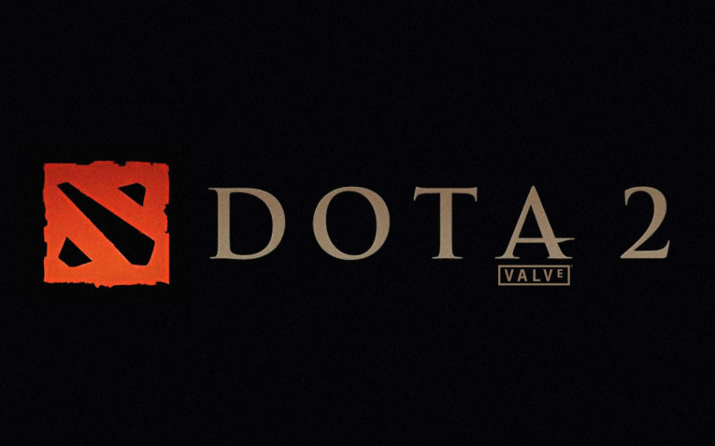
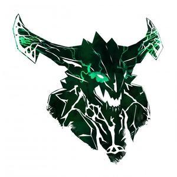
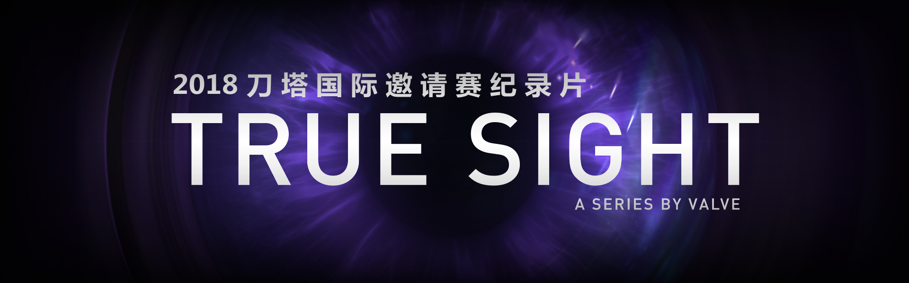
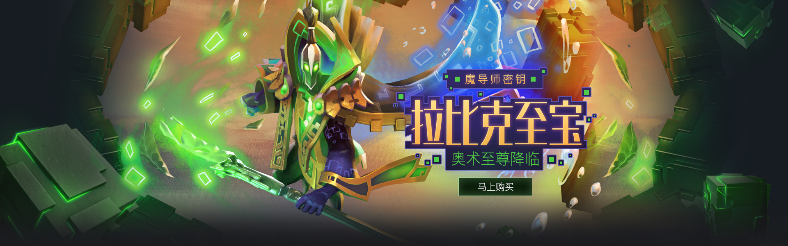

Toggle navigation

欢迎来到DOTA2！
首页
新手引导
资讯新闻
官方新闻
赛事新闻
更新日志
数据资料
英雄数据
物品数据
下载中心
登录
注册



新闻中心
2019-01-16
DOTA2 1月16日更新：迎霜节的珍藏II上架
2019-01-14
欢迎回家” 恭喜EHOME斩获布加勒斯特Minor冠军晋级重庆Major
2018-12-28
1个至宝=115个英雄特效 最“绿”至宝拉比克“魔导师密钥”登场
2018-12-20
凌霜圣地：迎霜节奇谈
版本更新
游戏性更新 7.20
游戏性更新 7.19
游戏性更新 7.18
游戏性更新 7.10
游戏公告
DOTA2真视界——TI8总决赛纪录片
两支队伍，十人追梦。冠军神盾终究只有一面，胜利者喜悦的同时， 也注定会有失意者的落寞。2019再战上海，风霜后的果实才分外甜美。
----2019-01-16
关于我们
|
广告服务
|
联系我们
|
招聘信息
|
友情连接
|
官方微博
Author © 2018-2019 Nevermore